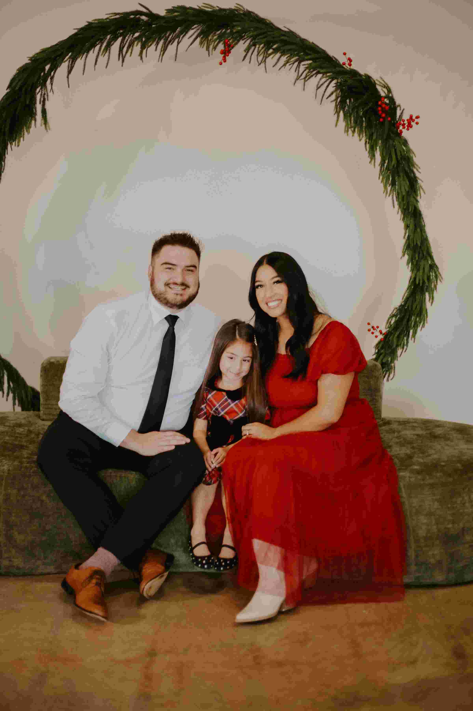
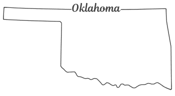

Kyle S. Emler
About Me

My name is Kyle Emler. I am currently studying web development while working in a sales role in the telecommunications industry. My professional background is focused on direct customer interaction, problem solving, and finding practical solutions that help people improve their services or technology. I enjoy learning how the internet and modern applications work behind the scenes, and I am developing skills in HTML, CSS, programming, and database concepts as part of my coursework. My goal is to build a strong technical foundation that allows me to create useful, well-designed digital tools and continue expanding my knowledge in the field of technology.
Outside of school and work, I enjoy spending time with my family and pursuing hobbies that challenge me to improve and stay active. Disc golf is one of my favorite activities, and I enjoy practicing and competing while working to steadily improve my skills. I also enjoy cooking, working on small projects around the house, and learning new things that make everyday life a little more efficient. I value practical knowledge, continuous improvement, and finding ways to balance professional growth with personal interests and family life.

I live in Broken Arrow, Oklahoma. Originally I grew up in Muskogee, OK and moved here when I got married in 2019. Oklahoma is typically assumed to be flat and boring.. that would be a correct assumption.
Heading
- Item 1
- Item 2
- Item 3